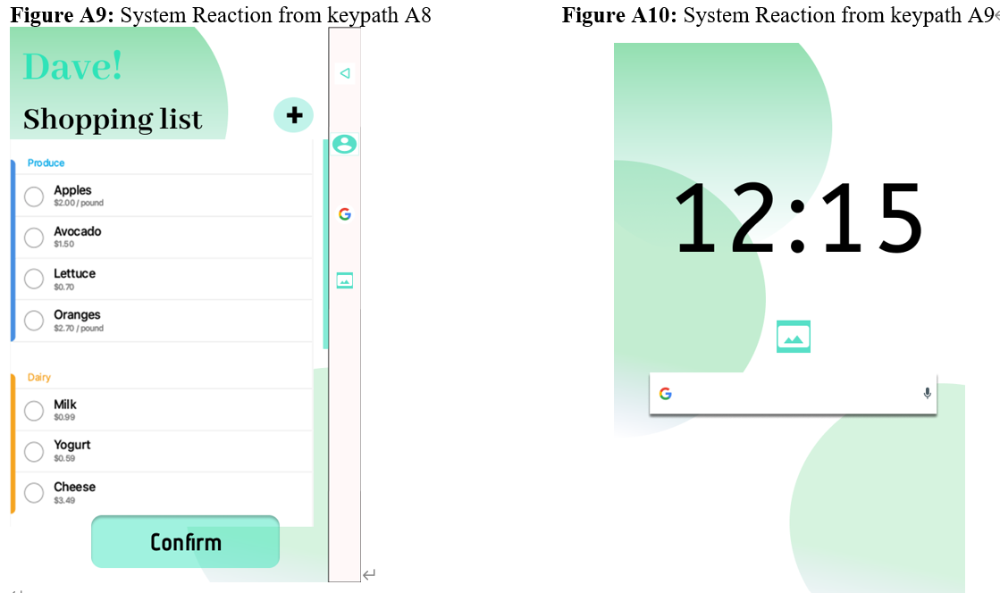
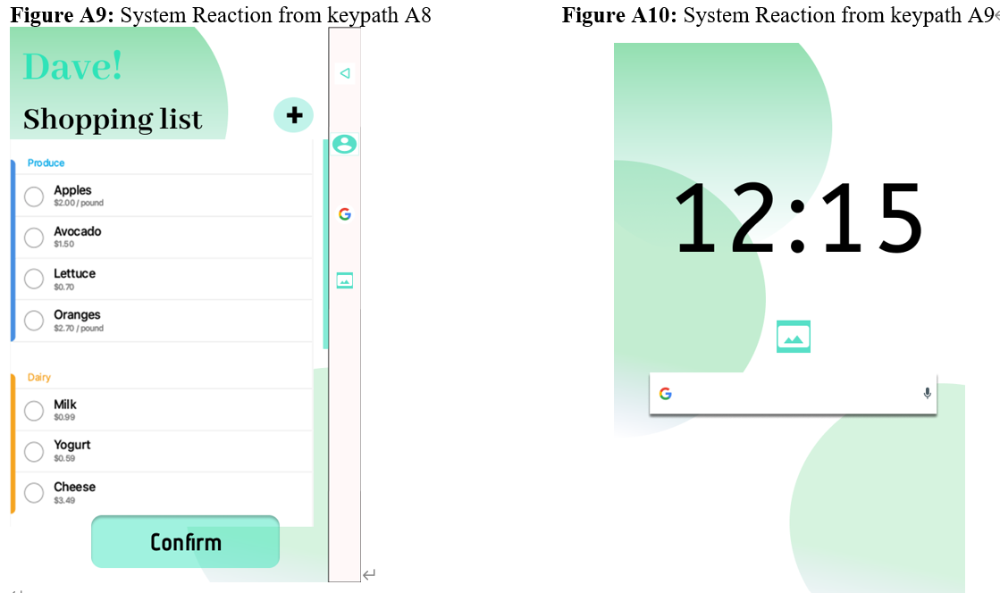

Natal 18
- Welcome
- Team Profile
- Project Overview
- Project Description
- Plans and Progress
- Skills & Jobs
- Group Reflection
- References
Plans and Progress
Project Development
This project is still in very early development stages, but the aims and goals have been greatly refined since Muzzammil’s initial conception of a smart fridge with an AI assistant. The initial goal of reducing household food waste remains the same. After researching and discussing the best methods, systems and features to be put in place, it became apparent that the initial idea to notify users when their food was about to spoil did not address the root cause of household food wastage. We realized this feature should not be the main priority of this project, and it became apparent we needed to introduce features that would prevent overordering of food instead.
Aiming to reduce excessive food purchases would better address the root cause of waste issues in households. Mainly, that a large portion of food bought will spoil as leftovers. This is when the idea for AI monitoring of household’s food intake, creating meal plans, and generating appropriate shopping lists came about.
When discussing these features and planning their function, it became apparent there is other benefits of them too. By automating the ordering process of food, the Natal fridge would reduce the amount of time each household spent shopping every week. Initially, the time this would save didn’t seem like much, but as an aggerate, it would save users hundreds of hours across the lifetime.
Another benefit and motivating factor that became clear was found in the generation of meal plans and diets for the household. Tummy would help users live healthier, happier lives. If a particular household member is overweight, having their meals planned and food delivered will greatly reduce a large part of the challenge of losing weight.
The purpose of a fridge hasn’t changed since it’s conception. It is designed to keep food at cold temperatures, stay fresh and slow down the time it takes food to spoil. When developing this projects goals and aims, it was quickly decided that this project would not involve making a more efficient or better fridge. There are major companies that funnel money into engineering and R&D to innovate the mechanical functions of fridges, and this did not need to be part of our goal.
It was decided this project would concentrate only on the software and IT aspects, and was even discussed that if this project was to be taken past the initial concept stage, it would be developed in partnership with an existing fridge manufacturer, or a company that already has other smart home products on the market. This would mean that at a later date, the Natal fridge could be integrated into an existing smart home ecosystem.
Project Status
At this stage of the project, we have clearly defined the motivations and how each feature we will have at launch can address the goals we want to meet. Each feature has been clearly defined in it’s function, and concept work has been completed on how these will operate. User groups have been identified and context scenarios have been created, displaying the benefit and further fleshing out the functionality of each feature. Initial concept sketches of the fridge’s appearance have been completed, but won’t be taken any further at this stage, as the focus of this project is the AI and the accompanying features it will have at launch. Wireframes have been made to accompany the context scenarios and to act as initial concepts for the UI.
concept sketch
This rough sketch was used for developing the mechanical side and aesthetics of the Natal Fridge. This line of development wasn’t pursued any further than group discussion.
User Groups
Through the team’s initial discussion about our goals and motivations where able to identify who we believed would be the three major user groups for the Natal Fridge. As every household is made up of people from different cultures these user groups are speculative and based around household size. More research on potential user would need to be carried out for more accurate user groups. These where used to help the team expand on the features we would need and brainstorm
Features
Household Profile and Diet Customization
This feature allows users to create a household profile, inputting personal information for each member into the fridges database. Tummy would then create a series of suitable meal plans for each individual user, which can be adapted over time dependant on the needs to each household member. As Tummy learnt the food preferences for each user, it would suggest new recipes based on those preferences.
Household Persona – Small Family
Shelton Family
The Shelton’s are a family of three that live in the inner suburbs of Melbourne. Vanessa and Dave work full time and are extremely time poor. Dave has been gaining weight gradually over the past few years. Suzy is studying in year 12, does lots of extra-curricular activities, and has just adopted a vegan diet. Cooking and shopping is becoming inconvenient and time consuming for them. The family has very little time to prepare healthy meals that they can all enjoy because of their different dietary requirements.
Household Information:
Context Scenarios
Dave
Dave has just accepted delivery of his new Natal fridge. The fridge boots up and the front display turns on. Dave enters the personal information of each household member; age, gender, height, weight and dietary requirements/ preferences. He also inputs a household budget.
Tummy instantly calculates each household members BMI and creates a household meal plan. Dave notices that the Tummy has considered his daughters vegan diet and his wife's dislike of seafood. Surprised, Dave also notices that his BMI puts him in the overweight range, and Tummy suggest that he reduces his caloric intake by 300 calories a day for the next 6 weeks to bring him back into a healthy BMI. Dave approves the shopping list, coming in $30 under-budget, and the fridge places a delivery order with Woolworths. “That was easier than going shopping!”, Dave thinks as he sets the fridge to replenish the order in two weeks.
Vennesa
Three weeks later, Vanessa gets home from work and decides to start cooking dinner. She opens the meal plan on the display and selects dinner for Tuesday night. The fridge displays the list of ingredients she needs to make lamb curry, and as it’s a new recipe, the fridge offers an instructional video for her to follow. The video includes suggested portions and tells her how to prepare the lamb separately from rest of curry so Suzy can enjoy the dish too. Dave and Suzy get home and all three sit at the table. “Is Dave losing weight?”, she thinks as they sit down for dinner.
Kezpath Scenario-Dave
Wireframes - Dave context scenario
 

Smart Food Ordering and Replenishing Staples
After Tummy has a created a household meal plan that considers each individual need, it would compile a shopping list of raw ingredients required, in specific portions. After the shopping list has been approved by a user, the order will be instantly placed with their preferred supermarket chain.
Over time, Tummy would track the eating habits of each user and automatically add household staples to the shopping list that are not part of the constructed meal plans. For example, if a household member drinks approximately four litres of soda water each week, the fridge will take note and add soda water to the regular grocery list.
Household Persona Two – Professional Couple:
Michael and Tom
Michael and Tom are a professional couple who have just relocated out of Melbourne to the countryside. They are fitness fanatics and work out five times a week. They are very health conscious and adjust their diet regularly depending on their changing fitness goals. Michael does not eat dairy products.
Household Information:

Context Scenario
Tom:
Michael and Tom just completed a gym session and a run. When they get home, Tom starts to make a post gym smoothie for them. He opens the fridge and realises they are running low on protein powder and almond milk. Tom closes the fridge and taps the fridge display to wake it up to add almond milk and protein powder to the next order.
Surprised, Tom realises that the fridge has already predicted that he would run out of protein powder at the end of the week, as he added it to the order three times over the past three months. Tom closes the fridge and starts making the smoothie.
Michael:
While Tom is making smoothies, Michael decides he wants to change his fitness goal to gain more muscle mass. He opens the fridge’s companion app and goes into advance settings. He enters that he wants to gain and extra kilogram of muscle mass. The fridge automatically edits his required portions and protein intake for the next months and adjusts the next grocery order to include larger portions of high protein foods and adjusts the meal plan accordingly.
Keypath Scenario-Tom
Wireframes - Tom context scenario
Food spoilage alerts and notifications
Tummy will actively monitor The Natal Fridge’s contents, sending notifications to both the front display and companion app to inform the user when items are close to expiry dates. For example, if an item such as yoghurt was about to expire, Tummy will notify users, but also suggest having smoothies for breakfast the following day. This would ideally prevent items spoiling and going to waste. In the case of leftovers, Tummy would also send a household reminder for users to consume foods before a certain date.
Household Persona Two – Large Family
Field Family:
The Field family is a very large family that lives in the outer suburbs of Melbourne. Wendy works full time and Greg works part time so he can spend more time looking after the kids. The Fields have a very strict budget for food with 6 mouths to feed. Food keeps going to waste in their house as they make very large meals with lots of leftovers that aren’t getting eaten.
Household Information:
Context Scenario
Greg:
Greg is sitting on the couch watching Essendon thrash Collingwood on a Saturday evening. Greg’s phone blinks, and he has got a notification from the Natal fridge companion app on his phone stating the fried rice he made on Wednesday is close to going off. Greg taps the notification and opens the companion app. On the home screen there is message from Tummy suggesting he use the fried rice as a base to make arancini balls. Tummy has compiled a list of other ingredients in the fridge that Greg will need to make arancini. Greg pauses the footy and walks into the kitchen to start preparing dinner.
Keypath Scenario-Dave: